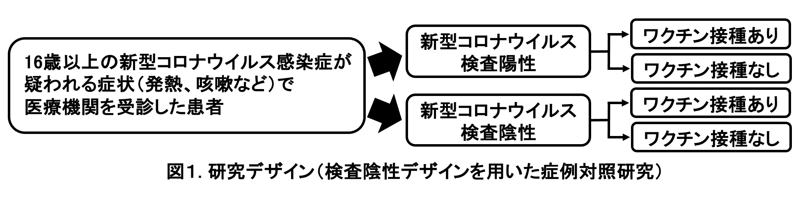
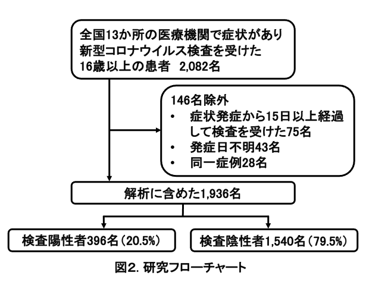
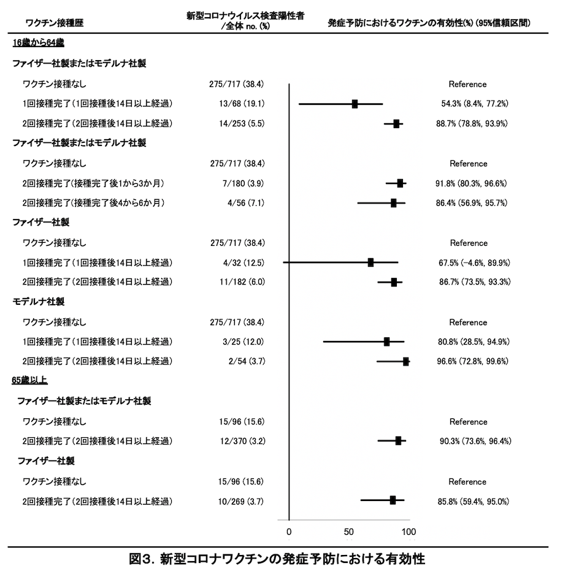

新型コロナワクチンの有効性に関する研究 〜国内多施設共同症例対照研究〜
Vaccine Effectiveness Real-Time Surveillance for SARS-CoV-2 (VERSUS) Study、第2報（最終版2022年2月2日）
長崎大学熱帯医学研究所
掲載日：2022年2月2日
要約
長崎大学熱帯医学研究所を中心とする研究チームは、全国の医療機関 （病院および診療所）と協力し、新型コロナワクチンの発症予防における有効性を評価する研究を2021年7月1日から開始した。今回、2021年7月1日～9月30日の登録患者情報を用いて結果をまとめた。16歳～64歳において2回接種完了 （2回目接種後14日以上経過）による発症予防における有効性は、ファイザー社製あるいはモデルナ社製いずれかのワクチンでは88.7% (95%信頼区間：78.8～93.9%)、ファイザー社製ワクチンに限定すると86.7% (95%信頼区間：73.5～93.3%)、モデルナ社製ワクチンに限定すると96.6% (95%信頼区間：72.8～99.6%)と推定された。65歳以上においては、ファイザー社製あるいはモデルナ社製いずれかのワクチンの2回接種完了による発症予防における有効性は90.3% (95%信頼区間：73.6～96.4%)、ファイザー社製ワクチンに限定すると85.8% (95%信頼区間：59.4～95.0%)と推定された。今回、ワクチン接種後の時間経過による有効性の減弱を評価することを目的として、16歳～64歳において、ファイザー社製あるいはモデルナ社製ワクチン2回接種完了後1～3か月と4～6か月でわけた解析を実施した。その結果、発症予防における有効性はワクチン2回接種完了後1～3か月で91.8% (95%信頼区間：80.3～96.6%)、4～6か月で86.4% (95%信頼区間：56.9～95.7%)と推定された。 本報告は長期サーベイランス研究の一部であり、10月以降も研究は継続しており、随時アップデートした結果を報告する予定である。なお、長期サーベイランスを行うことで、接種後からの時間経過、ブースター接種や変異株によってワクチンの有効性がどのように変動するかを評価する予定である。
背景
2020年後半に開発された新型コロナワクチンについて、現在までに海外の無作為化比較試験および観察研究で、各ワクチンの高い有効性が示されているが (1-4)、国内のデータは限定的である。しかし、新型コロナワクチンの追加接種など、国内におけるより適切なワクチン政策を議論する際の科学的根拠として、国内における最新のデータは必要不可欠である。 今回、長崎大学熱帯医学研究所を中心とした研究チームは、全国の医療機関 （病院および診療所）と協力し、これまでにインフルエンザワクチンや肺炎球菌ワクチンの研究で使用されている検査陰性デザイン （test-negative design：TND）を用いた症例対照研究を用いて (5, 6)、新型コロナワクチンの有効性を経時的に評価する研究を2021年7月1日から開始し、第1報にて、7月1日から8月31日分までの登録患者情報を用いて16歳～64歳における発症予防における新型コロナワクチンの有効性を示した (7)。本報告 （第2報）では、2021年7月1日から9月30日までの登録患者情報を解析し、16歳以上での新型コロナワクチンの包括的有効性、ワクチンの種類ごとの有効性、ワクチン接種後の経過期間による有効性の違いを報告する。なお、本研究は10月以降も継続しており、随時アップデートした結果を報告する予定である。
方法
2021年7月1日から9月30日までに全国9都県 （福島県、東京都、神奈川県、埼玉県、愛知県、奈良県、高知県、福岡県、長崎県）、計13か所の医療機関 （病院および診療所）において、新型コロナウイルス感染症を疑われる症状1)で受診した16歳以上の患者を対象に、患者基本情報、症状、新型コロナワクチン接種歴 （接種の有無、接種回数、接種日、接種したワクチンの種類）、新型コロナウイルス検査結果のデータを収集した。新型コロナウイルスの検査は、現在国内で確定診断に使用されている核酸増幅法検査 （PCRやLAMPなど）および抗原定量検査を対象とした。新型コロナウイルス検査陽性者を症例群、陰性者を対照群とした （図1）。発症から15日以降に検査を受けた患者および発症日が不明の患者を解析から除外し、同一患者は定義2)に基づいて除外した。65歳以上は新型コロナワクチン優先接種対象であり、接種時期やワクチン接種後の経過期間などに交絡がある可能性を考慮して、16歳～64歳、65歳以上に分割して解析を行った。

新型コロナワクチン接種歴は、未接種、1回目接種から13日以内、1回のみ接種完了 （1回目接種後14日以上経過）、2回目接種から13日以内、2回接種完了 （2回目接種後14日以上経過）、接種歴不明の6つのグループに分けた。検査結果 （陽性・陰性）に接種歴を含む種々の要因が与える影響を、混合効果ロジスティック回帰モデルを構築して調整オッズ比と95%信頼区間 (CI: confidence interval)を算出して評価した。ワクチンの有効性は、(1-調整オッズ比)×100%で算出した。回帰モデルには、検査結果 （陽性・陰性）を被説明変数、新型コロナワクチン接種歴、年齢、性別、基礎疾患の有無、カレンダー週、新型コロナウイルス感染症患者との接触の有無を固定効果 （fixed effect）、受診医療機関を変量効果 (random effect)の説明変数として組み込んだ。ワクチンの種類はファイザー社製 (BNT162b2)・モデルナ社製 (mRNA-1273)の両方を含めた解析と、ファイザー社製、モデルナ社製に限定した解析を行った。あわせて、接種後の時間経過によるワクチンの有効性の減弱の有無を評価することを目的として、ファイザー社製・モデルナ社製いずれかのワクチンについて、2回目接種完了 （接種後14日経過）後1～3か月、4～6か月の2群についての評価もおこなった。正確なワクチン接種日が不明であった患者については、接種日の推定法が接種後の経過日数、さらには接種完了の有無の判断にも影響しうる。感度分析として、複数の方法で接種日を推定した解析を行った。また、ワクチン接種歴が不明な患者は本報告のワクチンの有効性の解析からは除外しているが、多重代入法を用いてワクチン接種歴を補完した解析も行った。 本研究は長崎大学熱帯医学研究所および協力医療機関における倫理委員会で審査を受け、承認された後、実施した （長崎大学熱帯医学研究所倫理委員会における承認番号：210225257）。倫理委員会がない医療機関では、長崎大学熱帯医学研究所倫理委員会で一括審査を行った。
結果
全国9都県計13か所の医療機関において、2021年7月1日から9月30日までに新型コロナウイルス感染症が疑われる症状があり、検査を受けた16歳以上の患者2,082名が登録された。そのうち、発症日から15日以降に検査を受けた75名、発症日が不明の43名、同一患者28名は定義2)に基づいて除外し、合計1,936名を解析に含めた (図2)。

解析に含まれた1,936名 （うち検査陽性患者396名 （20.5％））の患者基本情報を表1に示す。年齢中央値 （四分位範囲）49歳 （30～72歳）、65歳以上は654名 (33.8%)、男性は1,033名 （53.4%）、1,767名 （91.3%）は自宅生活者であり、659名 （34.0%）に基礎疾患3)があった。217名 （11.2%）に新型コロナウイルス感染症患者との接触歴があった。517名 （26.7%）が7月に、779名 （40.2%）が8月に、640名 (33.1%)が9月に検査を受けた。
表 1：解析対象者（16歳以上）の基本情報と検査方法
| 全体 (n=1,936) | 検査陽性 (n=396) | 検査陰性 (n=1,540) |
年齢 n. (%) | |||
16-29歳 | 475 (24.5) | 148 (37.4) | 327 (21.2) |
30-39歳 | 278 (14.4) | 78 (19.7) | 200 (13.0) |
40-49歳 | 239 (12.4) | 68 (17.2) | 171 (11.1) |
50-59歳 | 201 (10.4) | 64 (16.2) | 137 (8.9) |
60-69歳 | 195 (10.1) | 12 (3.0) | 183 (11.9) |
70-79歳 | 220 (11.4) | 12 (3.0) | 208 (13.5) |
80-89歳 | 242 (12.5) | 11 (2.8) | 231 (15.0) |
90歳以上 | 86 (4.4) | 3 (0.8) | 83 (5.4) |
性別 n. (%) | |||
男性 | 1,033 (53.4) | 246 (62.1) | 787 (51.1) |
女性 | 903 (46.6) | 150 (37.9) | 753 (48.9) |
居住地 n. (%) | |||
自宅 | 1,767 (91.3) | 385 (97.2) | 1,382 (89.7) |
高齢者施設 | 121 (6.3) | 1 (0.3) | 120 (7.8) |
その他 | 31 (1.6) | 4 (1.0) | 27 (1.8) |
不明 | 17 (0.9) | 6 (1.5) | 11 (0.7) |
基礎疾患の有無 n. (%) | |||
有 | 659 (34.0) | 71 (17.9) | 588 (38.2) |
無 | 1,250 (64.6) | 314 (79.3) | 936 (60.8) |
不明 | 27 (1.4) | 11 (2.8) | 16 (1.0) |
基礎疾患詳細 n. (%) | |||
慢性心疾患 | 166 (8.6) | 13 (3.3) | 153 (9.9) |
慢性呼吸器疾患 | 182 (9.4) | 11 (2.8) | 171 (11.1) |
肥満 | 92 (4.7) | 24 (6.1) | 68 (4.4) |
悪性腫瘍 | 148 (7.6) | 8 (2.0) | 140 (9.1) |
糖尿病 | 181 (9.3) | 20 (5.1) | 161 (10.4) |
慢性腎疾患 | 76 (3.9) | 3 (0.8) | 73 (4.7) |
透析 | 21 (1.1) | 1 (0.3) | 20 (1.3) |
肝硬変 | 6 (0.3) | 0 | 6 (0.4) |
免疫抑制剤の使用 | 46 (2.4) | 4 (1.0) | 43 (2.7) |
妊娠 | 5 (0.3) | 2 (0.5) | 3 (0.2) |
喫煙歴 n. (%) | |||
なし | 972 (50.2) | 185 (46.7) | 787 (51.1) |
過去に吸っていた | 304 (15.7) | 50 (12.6) | 254 (16.5) |
現在吸っている | 320 (16.5) | 93 (23.5) | 227 (14.7) |
不明 | 340 (17.6) | 68 (17.2) | 272 (17.6) |
医療従事者 n. (%) | 108 (5.6) | 7 (1.8) | 101 (6.6) |
新型コロナウイルス感染症患者との接触 n. (%) | |||
有 | 217 (11.2) | 131 (33.1) | 86 (5.6) |
無 | 1,600 (82.6) | 250 (63.1) | 1,350 (87.7) |
不明 | 119 (6.1) | 15 (3.8) | 104 (6.7) |
症状から検査までの日数* | 2 (1-3) | 2 (1-4) | 1 (1-3) |
検査方法 n. (%) | |||
核酸増幅法検査 | 1194 (61.7) | 306 (77.3) | 888 (57.7) |
抗原定量検査 | 742 (38.3) | 90 (22.7) | 652 (42.3) |
*中央値（四分位範囲） | |||
解析対象者1,936人の新型コロナワクチン接種歴を表2に示す。未接種813名 （42.0%）、1回のみ接種完了102名 （5.3%）、2回接種完了623名 （32.2%）、接種歴不明152名 （7.9%）であった。
表 2：解析対象者（16歳以上）の新型コロナワクチン接種歴
|
|
| 全体 (n=1,936) | 検査陽性 (n=396) | 検査陰性 (n=1,540) |
ワクチン接種歴 n. (%) | |||||
未接種 | 813 (42.0) | 290 (73.2) | 523 (34.0) | ||
1回目接種から13日以内 | 125 (6.5) | 29 (7.3) | 96 (6.3) | ||
1回のみ接種完了（１回目接種後14日以上経過） | 102 (5.3) | 13 (3.3) | 89 (5.8) | ||
2回目接種から13日以内 | 121 (6.3) | 2 (0.5) | 119 (7.7) | ||
2回接種完了（2回目接種後14日以上経過） | 623 (32.2) | 26 (6.6) | 597 (38.8) | ||
接種歴不明 | 152 (7.9) | 36 (9.1) | 116 (7.5) | ||
ワクチンの種類* n. (%) | |||||
ファイザー社製 | 676 (69.6) | 42 (60.0) | 634 (71.4) | ||
モデルナ社製 | 140 (14.4) | 14 (20.0) | 126 (14.2) | ||
不明 | 155 (16.0) | 14 (20.0) | 141 (15.9) | ||
*接種歴のある971名のみ | |||||
16歳から64歳の患者におけるワクチン接種者の未接種者に対する調整オッズ比は、ファイザー社製・モデルナ社製いずれかのワクチンについて、1回のみ接種完了 （１回目接種後14日以上経過）では0.457 （95%CI：0.228～0.916）、2回接種完了 （2回目接種後14日以上経過）では0.113 （95%CI：0.061～0.212）であった （表3）。ワクチン接種後の時間経過による有効性の減弱の有無を評価する解析では、ファイザー社製・モデルナ社製いずれかのワクチンの2回接種完了群において、2回接種完了 （2回目接種後14日経過）後1～3か月では未接種者に対する調整オッズ比は0.082 (95%CI：0.034～0.197)、2回接種完了後4～6か月では0.136 (95%CI：0.043～0.431)であった。ファイザー社製を接種した患者に限定すると、未接種者に対する調整オッズ比は、1回のみ接種完了 （１回目接種後14日以上経過）では0.325 （95%CI：0.101～1.046）、2回接種完了 （2回目接種後14日以上経過）では0.133 （95%CI：0.067～0.265）であった。モデルナ社製を接種した患者に限定すると、未接種者に対する調整オッズ比は、1回のみ接種完了 （１回目接種後14日以上経過）で0.192 （95%CI：0.051～0.715）、2回接種完了 （2回目接種後14日以上経過）では0.034 （95%CI：0.004～0..272）であった （表3）。同様に65歳以上の患者における未接種者に対する調整オッズ比は、ファイザー社製・モデルナ社製いずれかのワクチンについて2回接種完了 （2回目接種後14日以上経過）では0.097 （95%CI：0.036～0.264）、ファイザー社製を接種した患者に限定すると、2回接種完了 （2回目接種後14日以上経過）では0.142 （95%CI：0.050～0.406）であった （表3）。65歳以上はワクチン接種開始時期が早く、またファイザー社製ワクチンを接種した患者が大部分であったため、1回のみ接種完了およびモデルナ社製を接種した患者に限定した解析は、患者数が少なく、実施しなかった。 上記の調整オッズ比を用いてワクチンの発症予防における有効性を算出したところ、16歳から64歳の患者においてファイザー社製・モデルナ社製いずれかのワクチンについて、1回のみ接種完了 （１回目接種後14日以上経過）では54.3% （95%CI：8.4～77.2%）、2回接種完了 （2回目接種後14日以上経過）では88.7% （95%CI：78.8～93.9%）であった。ワクチン接種後の経過時間でわけた解析では、ファイザー社製・モデルナ社製いずれかのワクチンについての2回接種完了群において、2回接種完了 （2回目接種後14日経過）後1～3か月では91.8% (95%CI：80.3～96.6%)、2回接種完了後4～6か月では86.4% (95%CI：56.9～95.7%)であった。ファイザー社製に限定すると1回のみ接種完了 （１回目接種後14日以上経過）では67.5% （95%CI：-4.6～89.9%）、2回接種完了 (2回目接種後14日以上経過）では86.7% （95%CI：73.5～93.3%）であり、モデルナ社製に限定すると1回のみ接種完了 （１回目接種後14日以上経過）では80.8% （95%CI：28.5～94.9%）、2回接種完了 (2回目接種後14日以上経過）では96.6% （95%CI：72.8～99.6%）であった。同様に65歳以上の患者では、ファイザー社製・モデルナ社製いずれかのワクチンについて、2回接種完了 （2回目接種後14日以上経過）では90.3% （95%CI：73.6～96.4%）であり、ファイザー社製に限定すると2回接種完了 (2回目接種後14日以上経過）では85.8% （95%CI：59.4～95.0%）であった (表3、図3）。
表 3：新型コロナワクチンの発症予防における有効性
|
| 調整オッズ比 | ワクチン有効性(%) |
16歳から64歳 | |||
ファイザー社製あるいはモデルナ社製 | |||
未接種者 | 1.000 | ||
1回のみ接種完了（接種後14日以上経過） | 0.457 (0.228 to 0.916) | 54.3 (8.4 to 77.2) | |
2回接種完了（2回目接種後14日以上経過） | |||
ファイザー社製あるいはモデルナ社製 | |||
（2回接種完了者をワクチン接種後の時間経過で分けた解析） | |||
未接種者 | 1.000 | ||
2回接種完了後1～3か月* | 0.082 (0.034 to 0.197) | 91.8 (80.3 to 96.6) | |
2回接種完了後4～6か月** | 0.136 (0.043 to 0.431) | 86.4 (56.9 to 95.7) | |
ファイザー社製 | |||
未接種者 | 1.000 | ||
1回のみ接種完了（接種後14日以上経過） | 0.325 (0.101 to 1.046) | 67.5 (-4.6 to 89.9) | |
2回接種完了（2回目接種後14日以上経過） | 0.133 (0.067 to 0.265) | 86.7 (73.5 to 93.3) | |
モデルナ社製 | |||
未接種者 | 1.000 | ||
1回のみ接種完了（接種後14日以上経過） | 0.192 (0.051 to 0.715) | 80.8 (28.5 to 94.9) | |
2回接種完了（2回目接種後14日以上経過） | 0.034 (0.004 to 0.272) | 96.6 (72.8 to 99.6) | |
65歳以上 | |||
ファイザー社製あるいはモデルナ社製 | |||
未接種者 | 1.000 | ||
2回接種完了（2回目接種後14日以上経過） | 0.097 (0.036 to 0.264) | 90.3 (73.6 to 96.4) | |
ファイザー社製 | |||
未接種者 | 1.000 | ||
2回接種完了（2回目接種後14日以上経過） | 0.142 (0.050 to 0.406) | 85.8 (59.4 to 95.0) | |
*ワクチン2回目接種から14日以上103日以内の患者 | |||

正確なワクチン接種日が不明であった患者については、接種日の推定法が接種後の経過日数、接種完了の有無の判断にも影響しうるため、今回は感度分析として複数の方法で接種日を推定した解析結果を比較したが、調整オッズ比に与える影響は限定的であった。また、本報告では、ワクチン接種歴不明の患者はワクチン有効性の解析から除外しているが、多重代入法を用いてワクチン接種歴を補完した場合でも、調整オッズ比に与える影響はやはり限定的であった。
考察
本報告では、ファイザー社製新型コロナワクチン (BNT162b2)あるいはモデルナ社製新型コロナワクチン (mRNA-1273)について2回目接種完了後14日経過したものにおいて未接種者と比較し、16歳以上において新型コロナウイルス発症予防における有効性があることを確認した。本報告に組み込まれた患者情報は7月1日から9月30日に検査を受けた患者であり、全国的にB.1.617.2系統 （デルタ株）に置き換わりはじめ、最終的には全国で9割以上がB.1.617.2系統 （デルタ株）に置き換わったと推定された時期であった (国立感染症研究所の解析では、8月下旬以降はL452R変異を有する検体の割合は東京・埼玉・千葉・神奈川で99％と推定されている (8-11))。そのため、両ワクチンともにデルタ株に対しても有効であると考えられる。英国からの報告では、ファイザー社製ワクチンの2回接種完了によるデルタ株への有効性は88.0% （95%CI 85.3-90.1%） (12)、カナダからの報告では、ファイザー社製ワクチンの2回接種完了によるデルタ株への有効性は92% （95%CI 89-94%）、モデルナ社製ワクチンの2回接種完了によるデルタ株への有効性は94% （95%CI 90-97%）とされており (13)、本報告と同等の結果となっている。この第2報では16歳以上64歳以下において、各ワクチンに限定した有効性を評価することができた。点推定値ではモデルナ社製ワクチンの方がファイザー社製ワクチンよりも有効性が高いが、95%信頼区間から判断すると両者の有効性に有意な差はなかった。本報告のデータでは、モデルナ社製ワクチン接種者の患者が少なく、今後のさらなる患者情報の集積が必要である。 今回の報告では第1報で評価できていなかった65歳以上における発症予防における有効性（ファイザー社製・モデルナ社製いずれかのワクチンの2回接種完了で90.3% (73.6～96.4%)）を 16歳～64歳以下と比較してほぼ同等と評価した。高齢者においては、若年者と比較して新型コロナワクチン接種後の中和抗体価が低いという研究が報告されている (14-16)。一方で、臨床現場における若年者と比較した際の高齢者のワクチンの有効性は研究によって異なる。カナダからの報告では、60歳以上におけるデルタ株に対するファイザー社製またはモデルナ社製新型コロナワクチンの有効性は、60歳未満と比較して同等～やや低いとし (13)、英国からの報告では、ファイザー社製ワクチンの65歳以上での有効性は65歳未満と比較して低いとされている (17)。本報告では、65歳以上のワクチンの有効性は65歳未満と比較してほぼ同等と考えられたが、ファイザー社製のみに限定した解析では95%信頼区間の幅も広い。年齢によりワクチンの有効性が異なるかどうかは、今後のワクチンの追加接種の優先順位などを決める際にも重要な指標となるため、今後も継続して評価が必要である。 ワクチン接種後の時間経過による有効性の減弱を評価することを目的として、16歳から64歳においては、ワクチン2回接種完了 （2回目接種後14日経過）から発症までの期間を1～3か月、4～6か月で分けて探索的な解析を行った。サンプルサイズの制約から95％信頼区間は広いが、有効性の点推定値は後者でやや低く、接種後の時間経過により有効性が下がることを示したイスラエル、米国、英国からの報告と矛盾しない可能性が示唆された (17-19)。一方で、本報告のデータでは接種完了後4～6か月においても、有効性の点推定値は80%以上であった。これについては、接種後4～6か月の患者が少なかったこと、また95%信頼区間が広いことから解釈には注意が必要である。今回の解析のみから国内における有効性の減弱について結論することはできない。 本報告や海外の研究でも示されているように、ワクチンの発症予防についての有効性は100％ではなく、ブレイクスルー感染は起こりうるため、ワクチン既接種者においても基本的な感染対策の継続は必要である。2021年冬には3回目のブースター接種も予定されており、ブースター接種による効果も今後評価することが必要である。合わせて、今回の報告で示されているように、ワクチン接種後の時間経過による有効性の減弱も評価する必要がある。なお、本報告では新型コロナワクチンによる入院・重症化予防における有効性や死亡に対する有効性を評価できないため、多方面からの研究が必要であると考える。本研究自体は10月以降も継続しており、随時アップデートした結果を報告する予定である。
制限
本報告にはいくつかの制限がある。1つ目は、対象患者が7月1日から9月30日の全国13か所の医療機関に限られており、現時点ではサンプルサイズが限定的である。2つ目は、現在日本では医療機関において受診者のワクチン接種歴を自動的に確認できるシステムは整備されていないため、接種歴は患者 （または患者家族）に対する問診で得られた記録を基にしており、思い出しバイアスの影響を否定できない。正確なワクチン接種日が不明な患者について「接種日」の推計方法を複数定めた感度分析や、ワクチン接種歴が全く不明な患者について多重代入法を用いた分析を行ったが、調整オッズ比の変動は小さく、一定の妥当性は担保されていると考える。3つ目は、陽性例について新型コロナウイルスゲノム解析を行っていないため、各ウイルス株に対する正確なワクチンの有効性を算出することは現時点では不可能である。4つ目は、本サーベイランスでは新型コロナの検査についてPCR法以外の方法 （LAMP法や抗原定量検査）で検査を行った患者も登録している。PCR法以外の検査方法も、十分な検査感度・特異度を有しており、確定診断として全世界的に使用されている方法であるため、PCR法以外を行った患者を含めることは妥当であると考えている。今後も研究を継続し、経時的な評価を行う方針である。
注釈
1) 発熱（37.5℃以上）、咳、倦怠感、呼吸困難、筋肉痛、咽頭痛、鼻汁・鼻閉、頭痛、下痢、味覚障害、嗅覚障害 (20, 21)
2) 同一症例の扱いは以下の定義を使用した(12)。
・陽性結果が出る前の3週間以内、/または陽性結果が出た後に採取した陰性検査は、偽陰性の可能性があるため除外する。
・同じ発症日に対して行われた陰性の検査は除外する。
・前回の陰性判定から7日以内に実施された陰性の検査は除外する。
・各人については、無作為に選んだ3回までの検査は含める。
・90日以内に複数回陽性になった場合は初めての陽性のみを組み込む。
3) 慢性心疾患、慢性呼吸器疾患、肥満（BMI≧30）、悪性腫瘍（固形癌または血液腫瘍）、糖尿病、慢性腎不全、透析、肝硬変、免疫抑制薬の使用、妊娠
研究チーム
長崎大学熱帯医学研究所 臨床研究部門：前田 遥、森本浩之輔
大分大学 医学部 微生物学講座：齊藤信夫
横浜市立大学 医学群 健康社会医学ユニット・東京大学大学院 薬学系研究科 医薬政策学： 五十嵐中
参加医療施設（50音順、敬称略、本報告に含まれる医療機関のみを記載）
川崎市立多摩病院：本橋伊織、宮沢 玲
北福島医療センター/福島県立医科大学：山藤栄一郎
五本木クリニック：桑満おさむ
埼玉県済生会栗橋病院：木村祐也、小美野勝、新井博美
市立奈良病院：森川 暢
髙木整形外科・内科：大原靖二
近森病院：石田正之
名古屋掖済会病院：須網和也、柳内 愛
虹が丘病院：寺田真由美
早川内科医院：早川友一郎
みずほ通りクリニック：勅使川原修
森山記念病院：森山 徹
ロコクリニック中目黒：嘉村洋志
研究協力
国立感染症研究所 感染症疫学センター：鈴木 基
研究資金
本研究は、AMED(国立研究開発法人日本医療研究開発機構)の課題番号JP21fk0108612の支援を受けている。
利益相反の開示
長崎大学熱帯医学研究所呼吸器ワクチン疫学分野は、ファイザー社より本研究に関連のない研究助成金を受けている。 東京大学大学院薬学系研究科医薬政策学は、武田薬品工業株式会社 （モデルナ社製新型コロナワクチン(mRNA-1273)の日本国内での供給をおこなっている）より本研究に関係のない研究助成金を受けている。
参考資料
Baden LR, El Sahly HM, Essink B, Kotloff K, Frey S, Novak R, et al. Efficacy and Safety of the mRNA-1273 SARS-CoV-2 Vaccine. N Engl J Med. 2020;384:403-416.
Polack FP, Thomas SJ, Kitchin N, Absalon J, Gurtman A, Lockhart S, et al. Safety and Efficacy of the BNT162b2 mRNA Covid-19 Vaccine. N Engl J Med. 2020;383:2603-2615.
Voysey M, Clemens SAC, Madhi SA, Weckx LY, Folegatti PM, Aley PK, et al. Safety and efficacy of the ChAdOx1 nCoV-19 vaccine (AZD1222) against SARS-CoV-2: an interim analysis of four randomised controlled trials in Brazil, South Africa, and the UK. The Lancet. 2020;397:99-111.
Dagan N, Barda N, Kepten E, Miron O, Perchik S, Katz MA, et al. BNT162b2 mRNA Covid-19 Vaccine in a Nationwide Mass Vaccination Setting. N Engl J Med. 2021;384(15):1412-1423.
Nauta J. Statistics in Clinical and Observational Vaccine Studies 2nd edition: Springer, 2020.
Sullivan SG, Feng S, Cowling BJ. Potential of the test-negative design for measuring influenza vaccine effectiveness: a systematic review. Expert Rev Vaccines. 2014;13:1571-91.
長崎大学熱帯医学研究所. 新型コロナワクチンの有効性に関する研究 〜国内多施設共同症例対照研究〜 第1報 Available from: https://covid-19-japan-epi.github.io/output/新型コロナワクチンの有効性研究.html
第45回厚生労働省新型コロナウイルス感染症対策アドバイザリーボード資料新型コロナウイルス感染症（変異株）への対応等（令和3年7月28日）. [cited 2021/11/26] https://www.mhlw.go.jp/content/10900000/000812902.pdf
第49回厚生労働省新型コロナウイルス感染症対策アドバイザリーボード資料3-2. 令和3年8月25日. [cited 2021/11/26] https://www.mhlw.go.jp/content/10900000/000823689.pdf
第54回厚生労働省新型コロナウイルス感染症対策アドバイザリーボード資料3-2. 令和3年10月6日. [cited 2021/11/26] https://www.mhlw.go.jp/content/10900000/000840249.pdf
第49回厚生労働省新型コロナウイルス感染症対策アドバイザリーボード資料. 新型コロナウイルス感染症（変異株）への対応等（令和3年8月25日） [cited 2021/11/26] https://www.mhlw.go.jp/content/10900000/000823698.pdf
Lopez Bernal J, Andrews N, Gower C, Gallagher E, Simmons R, Thelwall S, et al. Effectiveness of Covid-19 Vaccines against the B.1.617.2 (Delta) Variant. N Engl J Med. 2021;385:585-594.
Nasreen S, He S, Chung H, Brown KA, Gubbay JB, Buchan SA, et al. Effectiveness of COVID-19 vaccines against variants of concern, Canada. medRxiv. 2021:2021.06.28.21259420v2. https://doi.org/10.1101/2021.06.28.21259420
Schwarz T, Tober-Lau P, Hillus D, Helbig ET, Lippert LJ, Thibeault C, et al. Delayed Antibody and T-Cell Response to BNT162b2 Vaccination in the Elderly, Germany. Emerg Infect Dis. 2021;27:2174-8.
Brockman MA, Mwimanzi F, Lapointe HR, Sang Y, Agafitei O, Cheung P, et al. Reduced magnitude and durability of humoral immune responses to COVID-19 mRNA vaccines among older adults. J Infect Dis. 2021 Dec 9:jiab592.
Walsh EE, Frenck RW, Jr., Falsey AR, Kitchin N, Absalon J, Gurtman A, et al. Safety and Immunogenicity of Two RNA-Based Covid-19 Vaccine Candidates. N Engl J Med. 2020;383:2439-50.
Andrews N, Tessier E, Stowe J, Gower C, Kirsebom F, Simmons R, et al. Vaccine effectiveness and duration of protection of Comirnaty, Vaxzevria and Spikevax against mild and severe COVID-19 in the UK. medRxiv.2021:2021.06.28.21259420 https://www.medrxiv.org/content/10.1101/2021.09.15.21263583v1
Goldberg Y, Mandel M, Bar-On YM, Bodenheimer O, Freedman L, Haas EJ, et al. Waning Immunity after the BNT162b2 Vaccine in Israel. N Engl J Med. 2021;385:e85.
Tartof SY, Slezak JM, Fischer H, Hong V, Ackerson BK, Ranasinghe ON, et al. Effectiveness of mRNA BNT162b2 COVID-19 vaccine up to 6 months in a large integrated health system in the USA: a retrospective cohort study. The Lancet. 2021;398:1407-16.
World Health Organization. Coronavirus [cited 2021/11/26] https://www.who.int/health-topics/coronavirus#tab=tab_3
Centers for Disease Control and Prevention. Symptoms of Coronavirus 2021 [cited 2021/11/26] https://www.cdc.gov/coronavirus/2019-ncov/symptoms-testing/symptoms.html
問い合わせ先
長崎大学熱帯医学研究所 臨床研究部門：森本浩之輔
komorimo*nagasaki-u.ac.jp（*を@にして送信して下さい）
 クリエイティブ・コモンズ 表示 4.0 国際 ライセンスの下に提供されています。
クリエイティブ・コモンズ 表示 4.0 国際 ライセンスの下に提供されています。